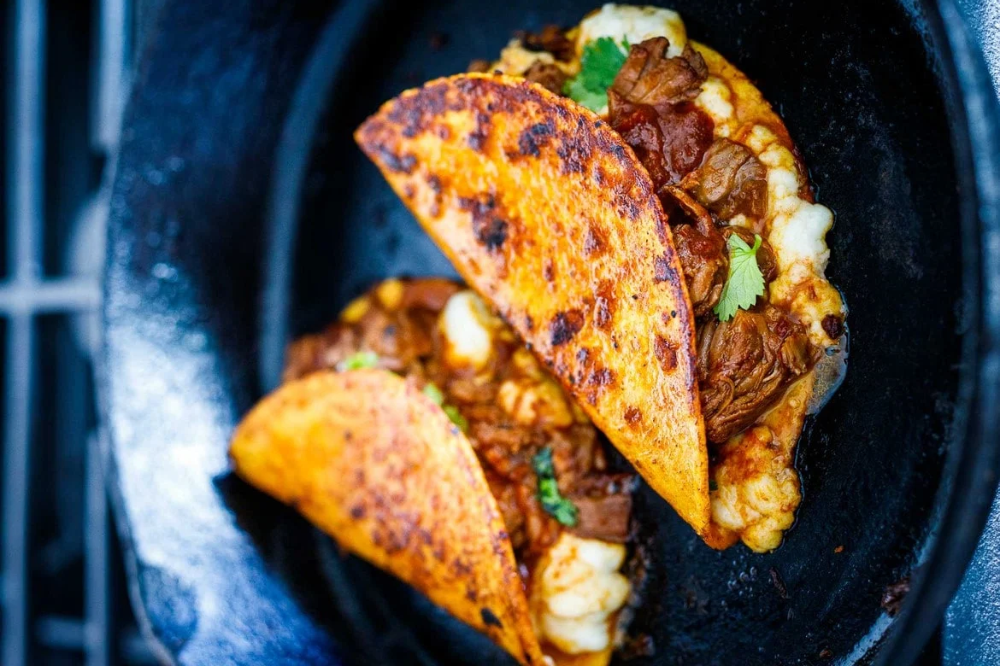
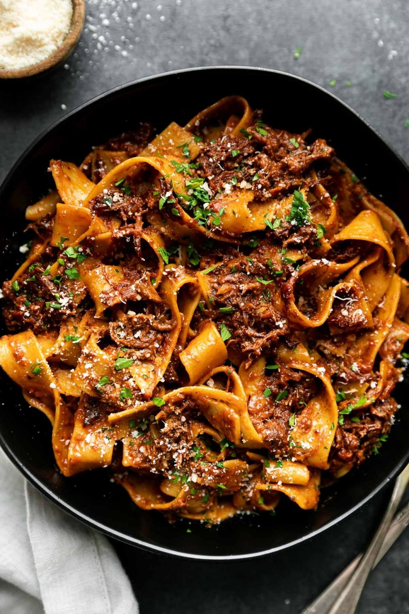
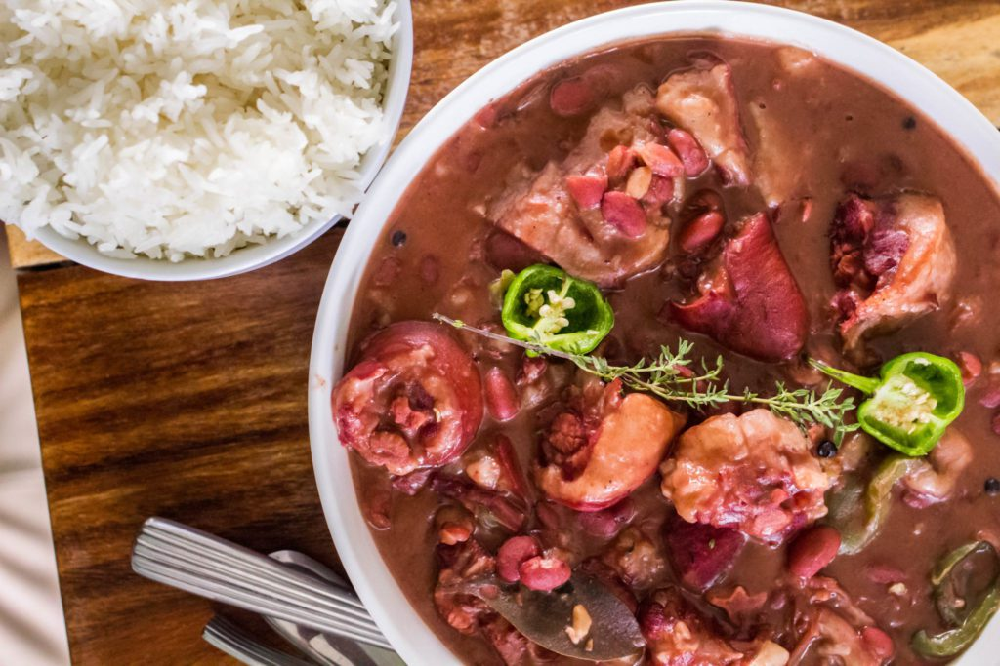

An Authentic Mexican Birria Recipe sourced from Feasting at Home.

Ingredients
- 4–6 dried chilies- guajillo chiles, pasilla, ancho (stems and seeds removed)
- 3 lbs beef stew meat (or lamb or goat) cut into 1 1/2-inch pieces – chuck roast, beef shoulder, lamb leg, lamb shoulder.
- Salt and pepper to taste (roughly 1 teaspoon salt per pound of meat)
- 1–2 tablespoons olive oil
- 1 large onion, diced
- 6 garlic cloves, roughly chopped
- 1/4 teaspoon ground cloves
- 1/4 teaspoon ground allspice
- 1 teaspoon cumin
- 2 teaspoons coriander
- 1 teaspoon chili powder
- 2 teaspoons dried oregano
- 2 bay leaves
- 1 cinnamon stick ( or sub 1/4 teaspoon cinnamon)
- Optional- 14-ounce can of diced tomatoes or 1 cup fresh, diced tomatoes
- 3 cups beef stock (or chicken stock)
- 1–2 teaspoons apple cider vinegar, optional
- Optional additions: 3-inch piece orange zest, 1-2 chipotle chiles (or 2-3 tablespoons adobo sauce sauce from the can)
Steps
- Toast the chilies in a dry skillet, being careful not to burn. This will allow them to release their oils. Cover with water, bring to a boil, and let simmer and soften until you are ready to add them to the stew. Drain the water and remove the seeds.
- Season the meat generously with salt and pepper and brown it in a large skillet over medium-high heat. Set it aside. (If you are in a hurry, you can skip the browning step and add it raw to the stew, but browning makes it more flavorful.)
- Heat oil in an Instant pot on the saute setting (or large Dutch oven over medium heat) and add onion and garlic, stirring and sauteing until fragrant, tender, and golden. Once softened and golden, add all the spices: cloves, allspice, cumin, coriander, chili powder, oregano, bay leaves, and cinnamon– and saute for 2 minutes, toasting them. Add the optional tomatoes and the beef stock. Stir and scrape up any browned bits.
- Add the browned meat and stir.
- Add the softened chilies on top.
- INSTANT POT: Set the instant pot to 45 minutes on high pressure. Let it naturally release.
- Dutch Oven:If using a dutch oven, cover tightly, and simmer gently on the stovetop, on low heat for 2 1/2 to 3 hours, until meat is very tender. Stir every hour. (Alternativly bake in a 350F oven).
- SLOW COOKER: Place this in a slow cooker on low for 8 hours.
- Optional: Once the meat is tender, fish out the chilies, and blend with a cup of the warm broth in a blender until pureed. Return to the pot, stirring it in. Shred the meat with two forks. You can also just leave the chilies whole.
- Season: Taste and season, adding a teaspoon or two of vinegar and adjusting salt and pepper to taste. If it tastes bland, it likely needs salt.
- Make Birria Tacos: Dip tortillas into the rich broth, lightly coating each side and place in a greased skillet, over medium heat, top with cheese, birria stew meat, and any fixings. Fold the over ( like a quesadilla) and pan-sear each side until crispy. Keep warm in the oven until serving.
Notes
- Chilies: Use dry mild chilies like Guajillo and Pasilla Chiles to add flavor and depth – but not too much heat. (Feel free to use other dried chilies, paying attention to heat level.) Add Chipotle for more heat and smoky flavor. If you want a milder stew, I suggest using only Guajillos (like 6). You can always add more spice at the end (cayenne, chili flakes, chipotle powder) if not sure. Using dried chilies really makes this dish, but they must be toasted and simmered to remove bitterness.
- If you prefer a brothier stew, you can always add more chicken or beef broth at the end of cooking, seasoning with a little more salt.
- Tomatoes: I have made this with and without tomatoes. Both are delicious. I almost prefer this without.
- MEAT: I used a mixture of lamb and beef. Tougher cuts of meat work great here like stew meat. Shoulder, shank, leg, etc. Goat meat is traditional.
- To Remove Fat: Make the stew ahead and cool – the fat will solidify at the top and then can be easily removed.
A Churrasco Recipe sourced from Diethood.
Equipment
- Cast iron Skillet
- Instant Read Meat Thermometer
Ingredients
The Chimichurri
- 1 cup finely chopped fresh parsley
- 3 cloves garlic, finely chopped
- 1½ tablespoons red wine vinegar
- ½ tablespoon lime juice
- ½ teaspoon lime zest
- ½ cup olive oil
- ½ teaspoon red pepper flakes, or to taste
- salt, to taste
The Marinade
- 1 cup freshly squeezed orange juice
- 3 tablespoons olive oil
- ¼ cup water
- ¼ to ½ small serrano chile
- 10 cloves garlic, divided
- 1 teaspoon salt
The Steak
- 1 pound skirt steak, 1/2″ thick
- salt and fresh ground black pepper, to taste
- 3 tablespoons vegetable oil
- ½ cup beef broth
Steps
The Chimichurri
- In a medium-sized bowl, combine the parsley, garlic, red wine vinegar, lime juice, lime zest, olive oil, red pepper flakes, and salt until well combined. Set it aside until ready to use.
The Marinade
- Add the orange juice, olive oil, water, serrano chile, and 3 garlic cloves to the blender. Process until you get a smooth mixture. Add the salt. Process again to combine. Pour the marinade into a large container or a large resealable Ziploc bag.
The Steak
- Finely chop the remaining 7 garlic cloves and add them to the marinade. Place the skirt steak in the marinade and refrigerate it for 1 hour.
- Remove the meat from the marinade and pat it dry with a paper towel. Season it with salt and pepper to taste on all sides.
- Place a cast iron skillet or a large pan over high heat. Let it heat for 2 to 3 minutes. Add the vegetable oil and let it heat up for another minute. Add the seasoned steak and sear it for 3 to 4 minutes; flip it over and let it cook for 2 to 4 minutes on the other side for a medium-rare steak, or to an internal temperature of 130˚F to 135˚F.
- Cook it for another minute or so if you like your steak a little more cooked. Use a Meat Thermometer to check for doneness.
- Remove the steak from the skillet and set it on a cutting board. Let it rest for 5 to 10 minutes.
- In the meantime, make the jus. Return the skillet to the burner and reduce the heat to medium. Pour the beef broth into the skillet and, using a wooden spatula, gently scrape the bottom of the skillet to remove any browned bits from when the steak was cooking. Season with salt to taste, and let it reduce for 2 to 3 minutes. Remove the skillet from the heat and set aside.
- Using a sharp knife, carefully cut the steak against the grain into 1" slices. Set them on a serving plate and pour the jus on top.
- Serve with chimichurri on the side, and enjoy.
Notes
- Steak options: Churrasco steak is generally made with skirt steak, about 1/2-inch in thickness. But flank steak is a good alternative.
- Orange juice: If you can, use freshly squeezed orange juice, but you can also use store-bought orange juice.
- Chile options: You can use a jalapeno instead. In both cases, I recommend seeding the pepper.
- Jus: This is a fancy word for a simple sauce made from the caramelization of animal proteins on a hot pan.
- Don’t crowd the pan: If you crowd the pan, not only will the steak not brown properly, but it will release all of its moisture, leaving you with a tough, dry finished product. If you want to double the recipe, don’t cook two steaks in the same skillet simultaneously.
- Let it rest: After cooking, let the steak rest for at least 5 minutes. This will allow the juices to settle in the meat, producing a more flavorful, juicy steak. Cutting against the grain makes steak more tender and easier to chew.
- Grilled Churrasco: To grill the steaks, place them on a preheated grill and cook for 2 to 3 minutes per side. Two minutes will yield medium-rare steaks, while three minutes will get you closer to medium-well. Remove them from the heat and let them rest for 5 to 10 minutes before cutting.
- Steak doneness. The ideal internal temperature for grilled skirt steak is 130°F for rare, 135°F medium-rare, 145°F medium, 150°F medium well, and 160°F for well done. Keep in mind that meat will continue to rise a few degrees once it’s off the grill.
Crispy Pan Fried Salmon
RATING: */5
Crispy Pan Fried Salmon sourced from Healthy Recipes.
Ingredients
- 4 salmon fillets - 6 ounces each, 1-inch thick, skin on, pin bones removed
- ½ teaspoon Diamond Crystal kosher salt - or ¼ teaspoon of any other salt, including Morton kosher salt
- ¼ teaspoon black pepper
- ½ teaspoon garlic powder
- ¼ teaspoon dried thyme
- 1 tablespoon olive oil
- 1 tablespoon butter
- Optional: 4 lemon slices - ¼-inch thick
- Optional: 2 tablespoons parsley - chopped
Steps
- Blot the salmon fillets dry with paper towels. Season them with salt, pepper, garlic powder, and dried thyme.
- Heat a large (12-inch) cast-iron skillet over medium-high heat. Add the olive oil and butter and swirl to coat. You can also use a nonstick skillet.
- When the butter starts foaming, add the salmon fillets, skin-side-down. If using, add the lemon slices.
- Cook the salmon, undisturbed, until the skin is crispy and browned, for about 4 minutes. Flip the salmon and lemon slices, lower the heat to medium, and continue cooking for 3 more minutes.
- If your fillets are 1 inch thick, cook the edges for about 2 minutes per side. This helps ensure the salmon reaches an internal temperature of 145ºF.
- Transfer the salmon fillets to a serving plate and drizzle them with the pan juices. Garnish the plate with lemon slices and chopped parsley, and serve.
Notes
- If your salmon is frozen, thaw it thoroughly before using it in this recipe. You can thaw it overnight in the fridge.
- You can skip the olive oil and use two tablespoons of butter. The butter's milk solids have a blackening effect, making the salmon extra-crispy.
- The best skillets for this recipe are nonstick or well-seasoned cast-iron skillets. I don't recommend using a stainless steel skillet - the salmon skin tends to stick to it.
- Don't forget to drizzle the salmon with the pan juices after you've arranged it on the plates. The pan sauce is delicious.
- You can keep the leftovers in an airtight container in the fridge for up to three days. I prefer to avoid reheating them because reheating can dry them out and make them taste fishy. Instead, I crumble them cold over a salad.
Slowly Braised Short Rib Ragu
RATING: */5
A Short Rib recipe sourced from Plays Well With Butter.

Ingredients
Slowly Braised Short Rib Ragu Sauce
- 4 pounds English cut beef short ribs
- 3 tablespoons olive oil, divided
- 3 large carrots, peeled and diced
- 1 large yellow onion, finely diced
- 1 stalk celery, finely diced
- 8 cloves garlic, finely chopped or grated
- 6 ounces tomato paste
- 1 cup dry red wine
- One (1) 0.75-ounce package fresh “poultry herb blend” (or approx. 2 sprigs fresh rosemary, 4 sprigs fresh sage leaves and 12 sprigs fresh thyme)
- 2 bay leaves
- Optional: 1 parmesan rind
- 14 ounces crushed tomatoes
- 2 cups low-sodium beef broth/stock or water
- Kosher salt and ground black pepper, to season
Short Rib Ragu Pasta
- 24 ounces pappardelle or pasta of choice, such as casarecce, bucatini, or gnocchi
- ½ cup heavy cream
- ½ cup grated parmesan
- For serving, as desired: grated parmesan, finely chopped fresh herbs, etc.
Steps
Slowly Braised Short Rib Ragu Sauce
- Brown the short ribs: Add the olive oil to a large, heavy-bottomed pot (I use a 5-qt Dutch oven) over medium-high heat. Use paper towel to pat the surface of the beef short ribs as dry as possible. Generously season the short ribs with 1 heaping tablespoon kosher salt and ground black pepper as desired. Once the oil in the pot is shimmering hot, carefully add in the seasoned short ribs. Work in batches, as necessary, to avoid overcrowding the pot (which prevents browning). Cook for 3-4 minutes per side, until nicely browned. Transfer the browned short ribs to a plate and set aside. Repeat, as necessary, with the remaining short ribs. Once all of the short ribs are browned, carefully drain off all but 2 tablespoons drippings from the pot. Set aside and discard once cooled. Returning the pot to medium heat.
- Brown the soffritto: Add the soffritto (carrots, onion, and celery) to the same pot used to brown the short ribs, seasoning with 1 teaspoon kosher salt and ground black pepper as desired. Stir to combine and cook, stirring occasionally, until the soffritto is deeply browned, 15-20 minutes.
- Add aromatics. Add the garlic to the pot with the soffritto. Stirring constantly, cook until fragrant, 1-2 minutes. Add the tomato paste to the pot, stirring to coat the soffritto. Cook 2-3 minutes, until browned.
- Deglaze: Increasing the heat to medium-high, pour the red wine into the pot. Stir constantly, using a wooden spoon to scrape up any browned bits that may have formed at the bottom of the pot. Cook for 3-4 minutes, until the wine is almost completely absorbed into the soffritto.
- Build and simmer the short rib ragu: Tie the herbs together using kitchen twine (or finely chop if you do not have twine), then add to the pot with the bay leaves and parmesan rind (if using). Add the crushed tomatoes, beef broth/stock (or water), and browned short ribs from Step 1. Stir to combine. Bring the mixture to a boil. Reduce heat to a low. Cover and simmer, stirring occasionally, for 2 1/2 – 3 hours, or until the short ribs are fall-apart tender. If the ragu begins to reduce too much (i.e. it loses too much of its liquid too quickly), feel free to add in a splash more water and/or reduce the heat further.
- Finish the braised short rib ragu: Carefully transfer the short ribs to a plate or cutting board. At this point, you can remove and discard the spent herbs, bay leaves, and parmesan rind from the pot, as well. Use tongs or 2 forks to shred the short ribs into bite-sized pieces, discarding the bones as you go. Return the shredded short ribs to the pot with the ragu. Stir to combine. At this point, you can cool and store for later use (see Recipe Notes for storage and freezing directions), or proceed with making the short rib ragu pasta (below).
Short Rib Ragu Pasta
- Boil the pasta: Bring a large pot of salted water to a boil. Add the pasta and cook, stirring occasionally, until the pasta is cooked to al dente according to package directions. Carefully dip a liquid measuring cup into the pot, reserving about 1 cup of the starchy pasta water, and set aside. Carefully drain the pasta – do NOT rinse it!
- Finish the short rib ragu sauce: Meanwhile, as the pasta boils, bring the braised short rib ragu up to a simmer. Stir in the heavy cream and parmesan cheese. Continue to simmer over low heat, stirring occasionally.
- Short rib ragu pappardelle: Add the cooked pasta to the pot with the braised short rib ragu sauce, tossing to coat. The short rib ragu should evenly coat the pasta. Add in some of the reserved pasta water if the ragu needs to loosen up a little; add in an extra handful of parmesan if it needs to tighten up a little. Cook over medium heat for 1-2 minutes, allowing the pasta to meld with and absorb some of the ragu.
- Serve: Portion the short rib ragu pappardelle into individual pasta bowls, topping with additional grated parmesan, chopped fresh herbs, and/or crushed red pepper as desired. Serve immediately. Enjoy!
Notes
Make-Ahead, Storage and Freezing
- Storage Instructions: Beef short rib ragu sauce stores incredibly well – it’s the type of thing that gets even better as it sits and its flavors have the chance to meld together. To store, prep the sauce through Step 6 of Recipe Directions, above. Once cooled, transfer to an airtight container and store in the refrigerator for 4-5 days. Whip up a batch of short rib ragu pasta during the week by reheating the braised short rib ragu in a skillet, and completing the recipe according to “Short Rib Ragu Pasta” Steps 1-4, above.
- Freezing Instructions: Short rib ragu is also incredibly freezer-friendly. To freeze, transfer the cooled short rib ragu sauce to a freezer container (or divide it up between multiple freezer containers for smaller portions). Freeze up to 3 months. To thaw, place the frozen ragu in the refrigerator overnight or submerge the freezer container in room temperature water for a quicker thaw. Reheat the ragu sauce in a skillet. If the thawed ragu sauce is a little watery at first, simply allow any residual water simmer out. If the thawed ragu sauce is too thick, simply add in a splash of water or stock until your desired consistency is reached. Complete the recipe according to “Short Rib Ragu Pasta” Steps 1-4, above
Alternative Cooking Methods
- Oven Braised Beef Short Rib Ragu: Prep the recipe according to Steps 1-5, above. Rather than braising on the stovetop, transfer the covered pot to a 325 degree F oven. Braise in the oven for 2 ½ – 3 hours, until the beef short ribs are fall-apart tender, then finish the short rib ragu sauce as directed in Step 6 and complete the recipe according to “Short Rib Ragu Pasta” Steps 2-4.
- Crock Pot / Slow Cooker Short Rib Ragu: Prep the recipe according to Steps 1-4, above. Transfer the soffritto mixture to the slow cooker, along with the aromatics, tomatoes, broth/stock (or water), and browned beef short ribs as directed in Step 5. Slow cook on high for 4-5 hours or on low for 7-8 hours, stirring occasionally. Finish the short rib ragu sauce as directed in Step 6 and complete the recipe according to “Short Rib Ragu Ragu Pasta” Steps 2-4, which you can do right in your slow cooker. If your slow cooker has a searing/browning feature, you can use it to cook the entire short rib ragu sauce recipe (Steps 1-6) in the slow cooker.
- Electric Pressure Cooker / Instant Pot Short Rib Ragu: Use your Instant Pot’s “Sauté” setting to cook the recipe according to Steps 1-5, above. Cover and seal the pressure cooker and cook on manual high pressure for 50 minutes. Allow the pressure cooker to naturally release pressure for 10 minutes before carefully flicking the valve to its “venting” position to vent out any residual pressure. If the ragu seems a little too liquidy, feel free to turn on the Sauté setting again, letting the sauce simmer down a little before finishing as directed in Steps 6. Complete the recipe according to “Short Rib Ragu Pasta” Steps 2-4, which you can do right in your pressure cooker pot.
A Jamaican Stew Peas Recipe sourced from Chef Samantha George.

Ingredients
- 2 lb cured pigtails
- 1-2 lb beef stew chunks
- 2 cups red peas (dried)
- 4 cups of water
- 6 cloves of garlic (minced)
- 2 bay leaves
- 1 large onion (diced)
- 1 tsp ginger grated
- 6 Pimentos seeds (whole)
- Black peppercorns (grounded)
- 2-3 green Scotch bonnet peppers (whole)
- 1 medium carrot (peeled and diced)
- 2 tsp thyme leaves
- 1 stalk scallion (diced)
- ½ green sweet/bell pepper (diced)
- ½ cup Coconut milk (optional)
Steps
- Soak the pigtails overnight in a mixing bowl full of water in the refrigerator to remove excess salt and discard the water and set the pigtail aside. If you’re short on time, just when you’re ready to cook the dish, bring a soup pot halfway full of water, cook the pigtails, boil them for about 30 minutes, and discard the salinized water.
- Rinse the red peas to remove any residues. Soak for about half-hour in 2 cups of water.
- Place the pigtails, beef, peas with soaking water, garlic, onion, and ginger in a pressure cooker. Pour in 4 more cups of water, then seal and pressure cook for about 30 minutes until the peas and meats are tender. NB. (Take care to follow the pressure-cooking instructions that came with its manual.)
- Now it’s time to finish the stew. To do this, use a large, slotted spoon to remove 1 cup of the cooked peas and add them to a blender along with 1 cup of the stew liquid and coconut milk along with 1 tbsp corn starch.
- Blend this mixture into a thick soup then pour this creamy mixture back into the pot and stir well to combine. Add diced carrots and simmer on medium heat for about another 5 minutes until the gravy has thickened and the carrots are cooked.
- Add the thyme leaves, and sweet peppers, and simmer for another 3 minutes. Serve hot over warm steamed white/ cauliflower rice and a side of garden salad.